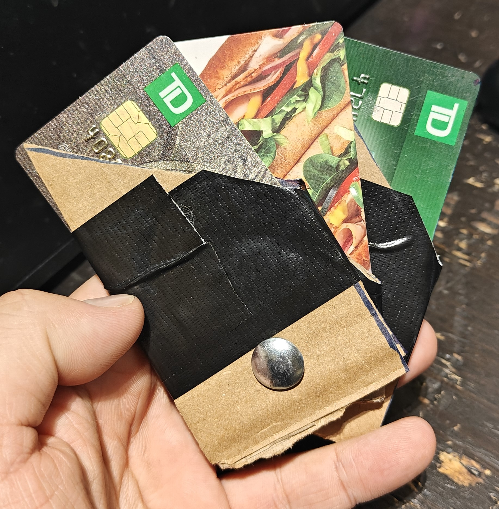
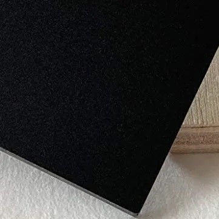
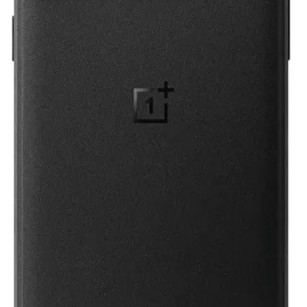
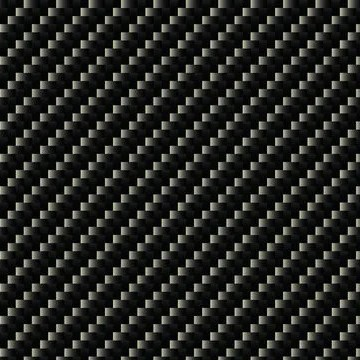
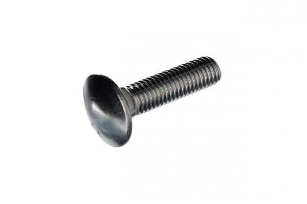

IAT 336 - Final Project - Accessible Wallet
1st Iteration
For iteration 1 I started by looking through the Neil Squire site. I ended up choosing an accessible wallet idea. It just happened to be the post that caught my eye. It was a request for a wallet that was easier to use with weaker fine motor skills.
I originally did the persona worksheet as a point list, but you can see the reformatted sheet below.
Materials: I am going with primarily plastic for my design with wood as secondary.
The sketch / idea that Ken & I decided would be the best to proceed with is shown below, the rest can be seen here. We agreed that it was the most interesting without being too complex. Note: I had a hard time adding shading, I hope this was close enough.

2nd Iteration
Below is a picture of my cardboard model. I switched to doing an angled opening for the cards based on the feedback from Ken. I used a cut done bold for the pivot, which causes some problems for testing it because it sticks out more than I would like, but I think it is good enough to get the point across.
List of Technology: I don't think there is really anything that I could use. It will entirely be 3D printed with a 3D printed or found plastic pivot/pin, unless I can find a metal insert to
Most of the human factors assessment was covered by the 1st Iteration’s persona, but the full thing can be seen here.
3rd Iteration
I started modeling the wallet in OnShape based on my sketch, Ken's feedback, & measurements from my wallet. I watched some tutorials (listed below as well as a few others in the same series as the linked tutorials) to help me figure out how OnShape works as I have only used Solidworks before & I haven't done so for several years. My OnShape files is here.
Material Ideas
I have 3 primary for the material of the body of the wallet. The first is just simple matte black plastic. The 2nd is a similar material to the first, but has texturing that makes it easier to grip. I'm not exactly sure what specific type of plastic it would be, but I would like something similar to the OnePlus Sandstone texture. The 3rd / exotic material is carbon fiber. Additonally, the wallet could have RFID blockers added into the material, possible only with the carbon fiber becuase of the added cost.    Lastly, I could use something as simiple as cup head bolt to connect the card holders or a pivot machined spefficly for it. 
Notes for Next Meeting May 7 (Tuesday) *Round Corners (radius on corners) *Add me logo to front *Add material examples to blog (color / material), description / image for the pivot OnePlus Sandstone texture Carbon Fiber Example Matte Black Cup Head Bolt Option for extra card slots (3 - 6) Just plastic, no wood Apply a few colors / finishes for the model Any sort of exotic material that could be used (ex. carbon fiber) Interaction Analysis: Show 'steps' to use diagrams / instructions (hand drawn or vector trace the picture) * = Ken's comments for blog 3rd Iteration - G Doc